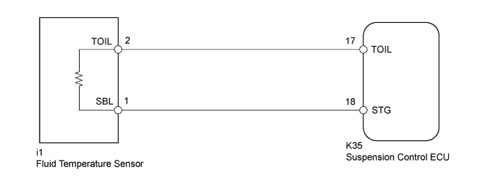
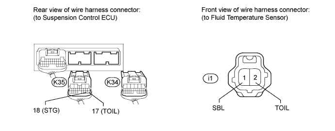
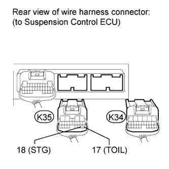

DTC C1719 Oil Temperature Sensor Circuit Malfunction |
| DTC Code | Detection Condition | Trouble Area |
| C1719 | When one of the following conditions is met:
|
|

| 1.READ VALUE USING INTELLIGENT TESTER (OIL TEMPERATURE SENSOR) |
Connect the intelligent tester to the DLC3.
Turn the engine switch on (IG) and the tester on.
Select the Data List mode on the intelligent tester.
Check the fluid temperature value of the temperature sensor displayed on the intelligent tester.
| Tester Display | Measurement Item/Range | Normal Condition | Diagnostic Note |
| Oil Temperature Sensor | Fluid temperature sensor reading / min.: -3276.8°C (-5866.24°F) max.: 3276.7°C (5930.06°F) | Actual fluid temperature | - |
|
| ||||
| OK | |
| 2.RECONFIRM DTC OUTPUT |
Clear the DTCs (Click here).
Perform a road test.
Check for DTCs.
| Result | Proceed to |
| DTC C1719 is output | A |
| DTC C1719 is not output | B |
|
| ||||
| A | ||
| ||
| 3.CHECK HARNESS AND CONNECTOR (TEMPERATURE SENSOR - SUSPENSION CONTROL ECU) |
Disconnect the K34 and K35 ECU connectors.
Disconnect the i1 sensor connector.

Measure the resistance according to the value(s) in the table below.
| Tester Connection | Condition | Specified Condition |
| K35-17 (TOIL) - i1-2 (TOIL) | Always | Below 1 Ω |
| K35-17 (TOIL) - Body ground | Always | 10 kΩ or higher |
| K35-18 (STG) - i1-1 (SBL) | Always | Below 1 Ω |
| K35-18 (STG) - Body ground | Always | 10 kΩ or higher |
|
| ||||
| OK | |
| 4.INSPECT FLUID TEMPERATURE SENSOR |
 |
Connect the i2 temperature sensor connector.
Disconnect the K34 and K35 ECU connectors.
Measure the resistance according to the value(s) in the table below.
| Tester Connection | Condition | Specified Condition |
| K35-17 (TOIL) - K35-18 (STG) | 20°C (68°F) | 2.32 to 2.59 kΩ |
|
| ||||
| OK | ||
| ||